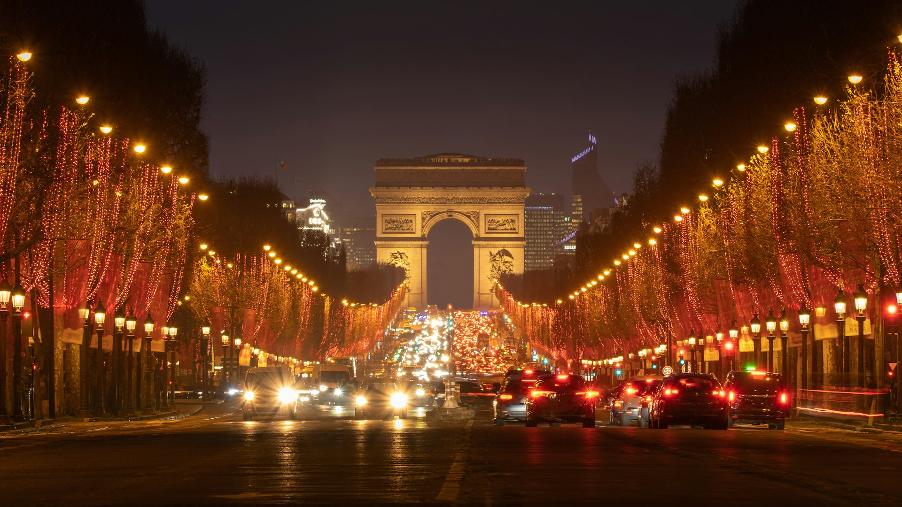

Paris on Christmas Day and New Year’s Day: what’s open and what’s closed
Orsay open on 1 January, the Louvre and Versailles closed, Notre-Dame and the Sacré-Cœur every day: the lowdown for Christmas 2026 and New Year’s Day 2027.
Photo: Pierre Blaché / Unsplash
Christmas Day 2026 and New Year’s Day 2027 both fall on a Friday. Many of the big museums and monuments in Paris close on those days, but not all: here is what stays open, what closes, and our ideas to make the most of them. List based on the opening times in our guides, checked in November 2026.
Open on 25 December and 1 January
- The Eiffel Tower: open every day, including 25 December and 1 January, from 9.30am; on 31 December it closes earlier, at 9pm.
- Notre-Dame: open every day, free entry (booking recommended).
- The Sacré-Cœur: the basilica is open every day from 6.30am to 10.30pm, free entry.
- The Musée Grévin: open every day, from 9.30am to 7pm on public holidays and during the school holidays.
- The Christmas markets: the Tuileries market is open every day from 11am to 11.30pm until 3 January 2027; the Champs-Élysées market runs until 4 January.
Open on 1 January, closed on 25 December
- The Musée d’Orsay: closed on Mondays, 1 May and 25 December, so it is open on Friday 1 January 2027.
- The Musée de l’Orangerie: closed on Tuesdays, 1 May, the morning of 14 July and 25 December, so it is open on 1 January.
- The Conciergerie: open every day from 9.30am to 6pm, except 1 May and 25 December.
On 1 January, Orsay, the Orangerie and the Conciergerie are among the few major sights open: book a timed ticket.
Closed on 25 December and 1 January
- The Louvre, the Palace of Versailles and Fontainebleau
- The Arc de Triomphe, the Sainte-Chapelle, the Panthéon and the Château de Vincennes
- Les Invalides (Army Museum and Napoleon’s tomb)
- The Musée Picasso, the Musée Rodin and the Catacombs
- The Cité des sciences at La Villette
Our ideas for these two days
- A Seine cruise: Paris lit up from the river, by day or with dinner; see our Seine cruise guide.
- A walk around Montmartre, the Île Saint-Louis or along the illuminated Champs-Élysées.
- Free Panthéon on Sunday 3 January 2027: entry is free for everyone on the first Sunday of the month, from November to March.
- The night before, on 31 December, the City of Paris puts on the free Champs-Élysées fireworks: see our New Year’s Eve ideas.
On 24 and 31 December, some sites close earlier than usual: check the opening times on the official website before you go. For the whole period, see also our Christmas holiday ideas and things to do in Paris in winter.
Opening times checked in November 2026 on our page for each place; they may change, check before you go.
Our holiday guides


Tours and activities
A few ideas to book for the holidays.
-
Musée d’Orsay tickets and tours
Timed tickets and guided Impressionist tours.
-
Christmas lights tour
Bus, walking or boat tours to see Paris lit up.
-
Christmas dinner cruise on the Seine
Festive menus on board, with views of the illuminated monuments.
Partner links.
Going over the festive season? See our Christmas holidays 2026 calendar.
Frequently asked questions
Which museums are open on 1 January in Paris?
Among the major museums, the Musée d’Orsay and the Musée de l’Orangerie are open on 1 January; the Louvre, Versailles, the Musée Picasso and the Musée Rodin are closed. Notre-Dame, the Sacré-Cœur and the Musée Grévin are open every day.
Is the Eiffel Tower open on Christmas Day and New Year’s Day?
Yes, the Eiffel Tower is open every day, including 25 December and 1 January, from 9.30am. On 31 December 2026 it closes earlier, at 9pm.
Is the Louvre open on Christmas Day?
No, the Louvre is closed on 25 December, 1 January and 1 May, as well as every Tuesday.
What can I do in Paris on Christmas Day?
Visit Notre-Dame or the Sacré-Cœur, stroll around the Tuileries Christmas market (open every day until 3 January 2027), see the Champs-Élysées lights or take a Seine cruise.